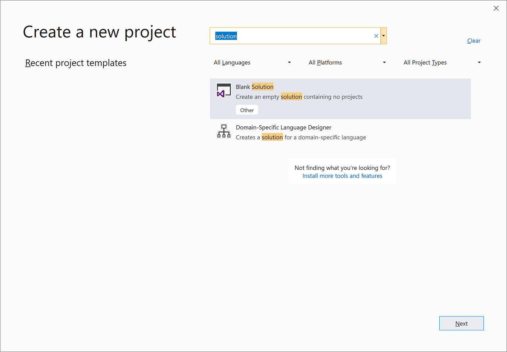
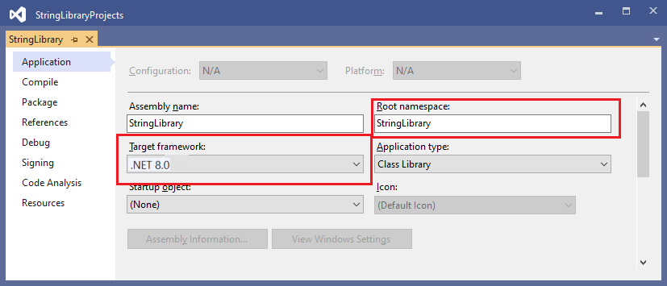
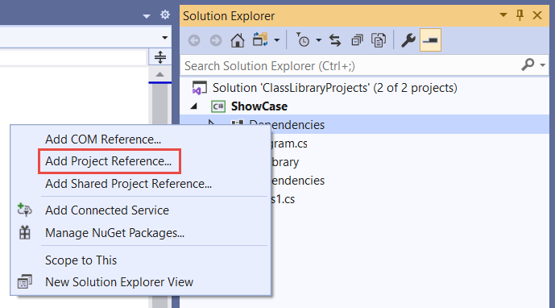
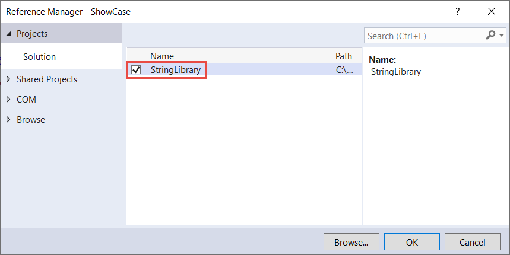
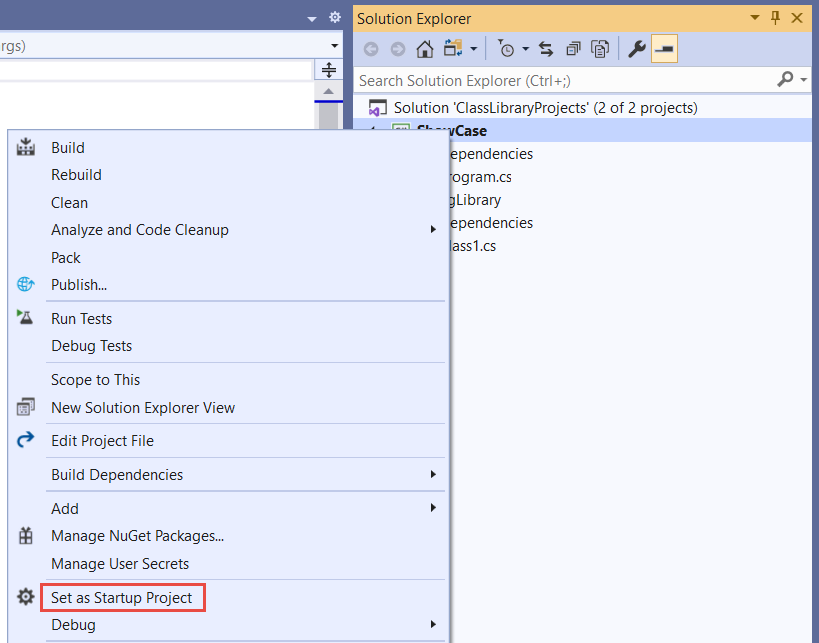
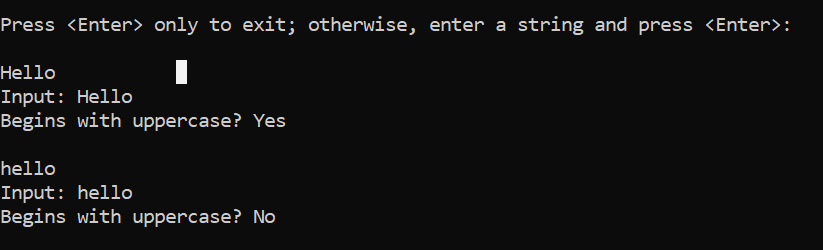

|
Библиотека классов определяет типы и методы,
которые могут быть вызваны из любого приложения. Если библиотека
предназначена для .NET Standard 2.0, она может быть вызвана
любой реализацией .NET (включая .NET Framework), которая
поддерживает .NET Standard 2.0. Если библиотека предназначена
для .NET 8, она может вызываться любым приложением,
предназначенным для .NET 8. В этом руководстве показано, как
использовать .NET 8.
Когда вы завершите создание библиотеки классов, можете
распространить ее как пакет NuGet или включить как компонент в
состав приложения, в котором она используется.
Начните с создания пустого решения для размещения проекта
библиотеки классов. Решение Visual Studio служит контейнером для
одного или нескольких проектов. Вы будете добавлять
дополнительные связанные проекты в одно решение.
Чтобы создать пустое решение, сделайте следующее:
-
Запустите среду Visual Studio.
-
На начальном экране выберите Создать
проект.
-
В поле поиска на странице Создание
проекта введите решение.
Выберите шаблон Пустое
решение и нажмите кнопку Далее.

-
На странице Настройка
нового проекта введите ClassLibraryProjects в
поле Имя
решения. Щелкните Создать.
Создание проекта библиотеки классов
-
Добавьте в решение новый проект библиотеки классов .NET с
именем "StringLibrary".
-
Щелкните решение в обозревателе
решений правой кнопкой мыши и
выберите Добавить>Новый
проект.
-
На странице добавления
нового проекта введите в поле
поиска библиотека.
Выберите C# или Visual
Basic из списка языков, а затем — Все
платформы из списка платформ.
Выберите шаблон Библиотека
классов, а затем нажмите кнопку Далее.
-
На странице настройки
нового проекта введите StringLibrary в
поле Имя
проекта, а затем нажмите Далее.
-
На странице "Дополнительные сведения" выберите .NET
8 (предварительная версия) и
нажмите кнопку "Создать".
-
Проверьте, предназначена ли библиотека для правильной версии
.NET. В обозревателе
решений щелкните проект библиотеки
правой кнопкой мыши и выберите пункт Свойства.
Текстовое поле
Target Framework показывает, что
проект предназначен для .NET 7.0.
-
Если вы используете Visual Basic, удалите текст в поле Корневое
пространство имен.

Для каждого проекта Visual Basic автоматически создает
пространство имен, соответствующее имени проекта. В этом
учебнике вы определите пространство имен верхнего уровня с
помощью ключевого слова namespace в
файле кода.
-
Замените код, отображаемый в окне кода, для Class1.cs или Class1.vb следующим
текстом, а затем сохраните файл. Если нужный язык не
отображается, измените селектор языка в верхней части
страницы.
namespace UtilityLibraries;
public static class StringLibrary
{
public static bool StartsWithUpper(this string? str)
{
if (string.IsNullOrWhiteSpace(str))
return false;
char ch = str[0];
return char.IsUpper(ch);
}
}
Библиотека классов UtilityLibraries.StringLibrary содержит
метод StartsWithUpper,
который возвращает значение Boolean,
указывающее, является ли первым символом текущего экземпляра
строки символ верхнего регистра. Символы верхнего регистра
определяются по стандарту Юникод. Метод Char.IsUpper(Char) возвращает true,
если символ является символом верхнего регистра.
Метод StartsWithUpper реализуется
как метод
расширения, чтобы вызывать его можно было так же, как
любой член класса String.
Вопросительный знак (?)
после кода string C#
указывает, что строка может иметь значение NULL.
-
В строке меню выберите Сборка>Собрать
решение или нажмите клавиши CTRL+SHIFT+B,
чтобы убедиться, что проект компилируется без ошибок.
Добавление консольного приложения в решение
Добавьте консольное приложение, использующее библиотеку классов.
В приложении пользователю будет предложено ввести строку и
сообщить, начинается ли строка с символа верхнего регистра.
-
Добавьте к решению новое консольное приложение .NET под
названием "Демонстрация".
-
Щелкните решение в обозревателе
решений правой кнопкой мыши и
выберите Добавить>Новый
проект.
-
На странице Добавить
новый проект введите в поле поиска консоль.
Выберите C# или Visual
Basic из списка языков, а затем — Все
платформы из списка платформ.
-
Выберите шаблон Консольное
приложение и нажмите Далее.
-
На странице Настроить
новый проект введите Демонстрация в
поле Имя
проекта. Теперь щелкните Далее.
-
На странице "Дополнительные сведения" выберите .NET
8 (предварительная версия) в поле
Framework. Щелкните Создать.
-
В окне кода замените весь код файла Program.cs или Program.vb следующим
текстом.
using UtilityLibraries;
class Program
{
static void Main(string[] args)
{
int row = 0;
do
{
if (row == 0 || row >= 25)
ResetConsole();
string? input = Console.ReadLine();
if (string.IsNullOrEmpty(input)) break;
Console.WriteLine($"Input: {input}");
Console.WriteLine("Begins with uppercase? " +
$"{(input.StartsWithUpper() ? "Yes" : "No")}");
Console.WriteLine();
row += 4;
} while (true);
return;
void ResetConsole()
{
if (row > 0)
{
Console.WriteLine("Press any key to continue...");
Console.ReadKey();
}
Console.Clear();
Console.WriteLine($"{Environment.NewLine}Press <Enter> only to exit; otherwise, enter a string and press <Enter>:{Environment.NewLine}");
row = 3;
}
}
}
В этом коде используется переменная row для
сохранения количества строк данных, записываемых в окно
консоли. Всякий раз, когда оно достигает значения 25 или
превышает его, код очищает окно консоли и отображается
сообщение для пользователя.
Сама программа предлагает пользователю ввести строку. Она
сообщает, начинается ли строка с символа верхнего регистра.
Если пользователь нажимает клавишу ВВОД,
не введя никакой строки, приложение завершает свою работу и
окно консоли закрывается.
Добавление ссылки на проект
Изначально новый проект консольного приложения не имеет доступа
к библиотеке классов. Чтобы позволить приложению вызывать методы
из библиотеки классов, создайте в проекте ссылку на проект
библиотеки классов.
-
В обозревателе
решений щелкните правой кнопкой мыши
узел Зависимости проекта ShowCase и
выберите команду Добавить
ссылку на проект.

-
В диалоговом окне Диспетчер
ссылок выберите проект StringLibrary,
а затем нажмите кнопку ОК.

-
В окне Обозреватель
решений щелкните правой кнопкой мыши
проект ShowCase и
выберите команду Назначить
запускаемым проектом.

-
Нажмите клавиши CTRL+F5,
чтобы скомпилировать и запустить программу без отладки.
-
Проверьте, как работает программа: вводите строки и
нажимайте клавишу ВВОД.
Чтобы выйти, нажмите клавишу ВВОД.

|